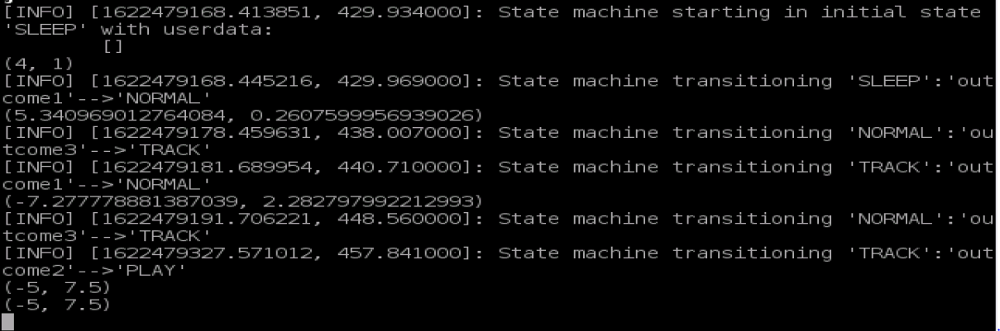
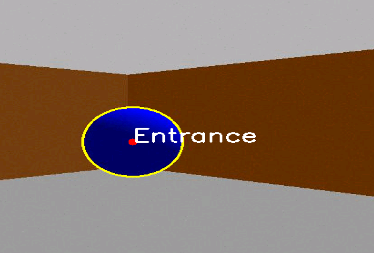

Documentation might take some time to load completely
Introduction
The aim of this assignment is to create a software architecture, which simulates a pet able to move autonomously inside a domestic environment, change its behavior and interact with a user, following its orders and exploring when asked to find unseen objectives.
The map of the environment is not known at the start of the robot movement, which entails that the robot can move autonomously both avoiding obstacles and simultaneously mapping the places it moves into. The environment itself was provided with the requirements with a description of the elements in it, among which the rooms names and correspondent ball color and the position of the owner. Here's a visual representation obtained from the simulation environment:
The robot
The robot itself was created for this assignment to allow for all the required features and can be seen in the following picture:
Robot
It is a differential drive device with a camera(for the objectives detection and tracking) mounted on the head, and a range-finder(to allow the obstacles avoidance), which can be seen as the white box protruding from its chest. The differential drive regulates the posterior wheels speed to achieve forward and backward movements and the robot turning around the vertical axis. The smaller front castor wheel allow for a stable support of the robot and the proper working of the differential drive.
Software Architecture, State Machine and communications
Here we show the main characteristics of the implemented system: the software architecture, the state machine and the communication methods.
Architecture
The software architecture is built around a finite state machine which encodes all the robot behaviors and the conditions which govern the change of states. The logic being that all required features are just aspects of the states and their interaction, obtained by appropriately activating or deactivating parts of code depending on the system state.
A representation of the architecture can be given in the following image:
This component diagram cannot really encompass all the logic and interconnections, but shows the main actors of the architecture:
- The "Behavior" component consists of a python script implementing a smach finite state machine. This finite state machines contains the implementation of most states and employs other scripts to perform the operations inside the remaining behaviors.
- The "Perception" component is an always active script which handles the features related to the camera. These are: the objective recognition(recognise the colored balls inside the image), the tracking and the obstacle avoidance while tracking(these two while moving closer to the recognised ball)
- The "Explore_lite" refers to a package which is activated each time the pet is in the play state and is asked to go in a never previously seen room(and it deactivates otherwise). This package is not implemented by the author, but allow the exploration of the environment as a frontier elimination process, where the exploration is done when all the frontiers have been explored.
- The "MoveBase" package is another external source which handles the motion of the robot to specific destinations. It can be imagined as the high-level controller and generates from the input the differential control output to achieve the objective while avoiding the obstacles and detecting whether the objective is achievable.
- The "User interface" handles both the randomic aspects of the robot(as the change of the states, and the inputs in case the user do not give one) and the interaction with the user, which can select when to enter the play state and where to go when the robot is at the user.
- The "Gazebo" environment handles the simulation of the entire system both of the robot movement and of the sensor data, which it distributes via publish/subscribe topics.
Althought they might seem disconnected, these nodes share information via a global parameter server which allow all nodes to have a singular always updated source of information.
State Machine
The state machine is implemented as a python script implementing a smach class.
This is composed by the following 6 states:
- Sleep: this state makes the robot go from its current position to its "home" or "doghouse" situated arbitrarily at (4,1) in the bedroom. Once arrived it waits till the state is changed by the user(giving a play command) or by chance, and makes it go back to the normal state.
- Normal: which enables a randomic roaming around the house which is interrupted by a change of state or by the identification of a not previously seen ball(corresponding to a room)
- Play: Although more complex in the implementation, this states simply allow the pet to come back to the owner every time it is sent to a known or an unknown destination. Most of the logic inside it is mostly to handle the various scenarios that can arise. For example, if the objective has never been seen, the robot will explore the environment until a ball have been found thanks to the interaction between the find state and the track state.
- Find: This node use in its implementation the code from the explore-lite package. Inside the finite state machine, in fact, there is just some code to launch the external code and to shut it down when the robot decide to go to sleep or if a ball have been found, switching to the track behavior.
- Track: As the previous, this code is implemented in an external script. The Perception script is an always running process which handles the camera feed. When a new ball is recognised and the state is appropriate, the robot use the camera and the rangefinder data to approach it, while avoiding obstacles. When it is close enough the robot saves its pose to the parameter server to be later use as the objective pose when the owner ask it to go to the room associated with that ball. In the other cases, the robot will display a contour around the identified balls and the respective room name.
- Recovery: This state, although not included in the requirements, allow the user to temporarily override the robot to a more useful position if it gets stuck in a wall. It is activated using the 2D navigation goal tool on rviz, and just guide the robot from its current position to the goal and then switch the state back to normal.
More concisely, we can see the interaction between the states in the following diagram:
Messages and parameters
The main parameters used for this implementation are:
- /state: state of the pet(0-sleep,1-normal,2-play,3-find,4-track,5-recovery)
- /home/{x,y,theta}: pose assigned to the place where the robot goes to sleep(defined a priori)
- /owner/{x,y,theta}: pose assigned to the place where the robot owner resides(defined a priori)
- /"room name"/{x,y,theta}: pose assigned by the robot to the ball assigned to the room with a generic "room name" after the tracking action have been completed(it is not defined at startup)
- /cplace: string indicating the current location of the robot, during movement it is "unknown"
- /destination/{x,y,theta,name}: contains the information of the destination of the movement
- /gazebo: gazebo anvironment parameters
Regarding the messages, they will be listed as
- geometry_msgs:Twist: used by Behaviours and Following to Gazebo in order to control the twist of the robot
- sensor_msgs:Image: Message with the image camera information
- exp_assignment.PlanningAction: message of the action server, it is used by the Pet_logic and Behaviour to use the action server of the ball and robot respectively
1 .geometry_msgs/PoseStamped target_pose
5 geometry_msgs/Pose position
## Packages and file list
12 │ │ └── Planning.action
14 │ │ ├── General.launch
15 │ │ ├── gmapping.launch
16 │ │ ├── launcher.launch
17 │ │ ├── move_base.launch
18 │ │ ├── move_plan.launch
20 │ │ └── simulation.launch
21 │ ├── nodelet_plugins.xml
24 │ │ ├── base_local_planner_params.yaml
25 │ │ ├── costmap_common_params.yaml
26 │ │ ├── global_costmap_params.yaml
27 │ │ ├── local_costmap_params.yaml
28 │ │ └── move_base_params.yaml
35 │ │ ├── gmapping_muting.sh
36 │ │ ├── go_to_point_action.py
37 │ │ ├── go_to_point_service_m.py
39 │ │ ├── user_interface.py
40 │ │ └── wall_follow_service_m.py
45 │ │ ├── slam_gmapping.cpp
46 │ │ └── slam_gmapping.h
49 │ │ │ ├── robot.gazebo
61 │ │ ├── architecture.dia
62 │ │ ├── screenshot.png
66 │ │ ├── costmap_client.h
67 │ │ ├── costmap_tools.h
69 │ │ └── frontier_search.h
71 │ │ ├── explore.launch
72 │ │ └── explore_costmap.launch
75 │ ├── costmap_client.cpp
77 │ └── frontier_search.cpp
81 │ │ └── Planning.action
83 │ │ └── motors_config2.yaml
85 │ │ └── gazebo_arm3.launch
88 │ │ ├── go_to_point.py
89 │ │ └── go_to_point_action.py
91 │ │ └── move_client.cpp
93 │ ├── m2wr_arm3.gazebo
Installation and running procedure
Here we will show the installation procedures and how to run the code, with the instructions to reproduce the behaviors obtained in this project.
Prerequisites
Installation
To download the package on the desired machines there are two ways
- Download the package from the github repository and put the whole content in the src folder of the desired catkin workspace
- Set the package in the src folder of the catkin workspace with a gi command
1 git clone https://github.com/Matt98x/Experimental_assignment_3.git
1 (Inside the catkin workspace)
2 source /devel/setup.bash
Running
- After the compiler has completed its task we can use the same shell to launch the simulation environment.
1 roslauch exp_assignment3 General.launch
When completed the launch will result in the following windows being open:
- The shell where the code have been launched: useful to observe the state of the robot, the coordinates of the objectives and the messages related to the robot movement

Main shell
- A second shell reporting the LaserScan data status
- A third shell with the possibility to introduce user commands
User interface
- The Gazebo simulation environment
- The Rviz visualizer
Mapping in Rviz
- A window showing what the robot sees

Robot camera
With this one can decide to just leave the robot roam and change state inside the environment or can give commands via the user interface as it will be explained in the next section.
User commands
- User Interface (In the proper shell, type one of the following commands being sure to respect the case of each letter and pressing ENTER after that)
- help: will display the list of possible commands with a brief description
- play: will set the robot in play state(waking up the robot if the user use it during the robot sleep state)
- room_list: will display the list of all available rooms
- go to 'room name' (with the name of the rooms in room_list, respecting the casing of the letters): when the robot is at the user, it can receive a command with the name of a room, if the room has been seen it will go to the memorized pose and come back, if not it will start exploring till a new ball have been found and then it will come back to the user
- Rviz
- Selecting the command 2D navigation tool in the top part of the Rviz GUI and selecting an achievable point in the map will set the robot in the recovery state. In this, the robot will forget everything it was doing and achieve that position, after that it will come back to the normal state
Working assumptions
The working assumptions will be discussed as the following list:
- The robot, simulating a pet move in a completely static world, so there are no moving or variable obstacles.
- The world is composed of 6 rooms containing a colored ball each, and is completely unknown to the robot at the beginning of program execution.
- It is in one and only one state at a time
- The objectives are represented by uniform color balls, which can not be found anywhere else in the entire environment.
- Each color is mapped to a specific room name (e.g. blue ball: kitchen).
- A new ball can only be recognise when the robot is in the normal or find state
- The commands can be just received when the robot is at the user
System features and limitations
Limitations
Here some systemic limitation given by the structure of the architecture:
- The system is not scalable in the number of individually controllable robots, but if all robots have the same state, it is scalable
- It is not scalable in the number of symbolic locations
- It is not really scalable in the number of states
- There are some problems with the target reaching the robot when it really close to the chassis
- The method to launch the find state is slow since every time a roslaunch must be called
Apart from these we have some limitations in the working procedures:
- For some still unidentified reasons, sometimes, the robot have have a false positive in the recognition of an already seen ball and end up moving against a wall(To correct it one can use the recovery state)
- There is some collision between the obstacle avoidance and the tracking control which mean that the angular position of the robot might swing when approaching a ball close to the wall
- If the robot is interrupted during a tracking phase derived from the find state it might miss the identification of a ball
Features
Talking about the system features, they can be divided in required and not required. As part of the first category we have:
- autonomous navigation of a robot in an ideal indoor environment
- building a map autonomously with frontier bases exploration and SLAM
- Reliable detection of colored balls in a controlled environment
- Perform visual servoing to approach a target detected by the camera while avoiding obstacles
- Visualization of the map, and costmap in RVIZ including the colored balls, that have been found, as colored markers
For the second, we have:
- The simplicity of the system makes it robust enough for long using(it performed up to 6 hours without problems before interrupting the test)
- Using the perception node as the track state allow for a modular design, and using just one track state instead of two separate
Possible technical improvements
- Add multiple robots to the simulation possibly adding namespaces to represent the knowledge of each robot
- Integrate the explore-lite to run continuously and find a way to activate and deactivate it
- Find a way to stop the exploration if all frontiers have been explored and give a way to explore after that if a ball have been missed(It has not appened during testing but it might happen if the robot is interrupted while tracking, the current solution is to use the normal state to eventually find them)
- Add a user readable debugging tool
Author and contacts
Matteo Palmas: matteo.palmas7gmail.com
 1.8.11
1.8.11